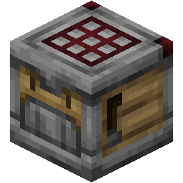

Minecraft продовжує розвиватися та отримувати новий контент регулярно. Нещодавно пройшов Minecraft Live 2023 на якому розробники детально поділилися планами з приводу нового оновлення майнкрафт 1.21. У цій статті детально розберемо, що зараз відомо про наступне оновлення Minecraft версія 1.21.

Нова структура Trial Chambers в Minecraft 1.21
В Майнкрафт з оновленням 1.21 почне генеруватися нова структура - Trials Chambers. Це буде структура з великою кількістю кімнат пов'язаних між собою, де гравцю доведеться постаратися, щоб перемогти ворогів, якими ці кімнати заповнені. Це стане цікавою та не простою пригодою для багатьох гравців, але нагорода буде того коштувати, адже у цій структурі буде чимало скринь з нагородами..
Новий моб Breeze (Вітерець) в майнкрафт 1.21.
Також у Minecraft 1.21 з'явиться новий моб - Breeze, або вітерець. Він буде з'являтися у новій структурі - Trial Chambers, про як я писав раніше. Breeze буде використовувати вітер як зброю, що логічно, враховуючи його назву. Вітер зможе відштовхувати гравця, а також активувати кнопки ти нажимні плити, що буде перетворювати нову структуру на динамічне поле бою.

Новий блок Trial Spawner в майнкрафт 1.21.
Також у грі з'явиться новий блок-спавнер, який і буде створювати ворогів у новій структурі. На відмінну від звичайного спавнера - цей буде створювати ворогів одразу групами та буде враховувати кількість гравців, які знаходяться в структурі. Також він буде спавнити обмежену кількість ворогів. Після того, як гравці розберуться з групою ворогів, у спавнера запуститься таймер до наступного спавну ворогів. Крім того, при знищенні цього блоку з нього можна буде отримати діаманти, смарагди та не тільки.
Новий блок мідна лампочка (Copper bulb) в Minecraft 1.21
Мідна лампочка - це новий блок, що випромінює світло, що з'являється у Minecraft 1.21. Він набагато унікальніший за більшість інших, оскільки кількість світла, яке він випромінює, залежить від стадії окислення, на якій він перебуває. Якщо блок повністю окислений, він випромінюватиме найнижчий рівень світла.
З іншого боку, якщо він знаходиться на початковій стадії і повністю оранжевий, він буде найяскравішим. Подібно до звичайних мідних блоків, ви можете зішкребти окислення з окислених мідних лампочок, щоб вони випромінювали більше світла. Про це ще не згадувалося, але, ймовірно, ви зможете нанести віск на цей блок і зберегти рівень його яскравості.

Новий блок Crafter для автоматичного крафту в майнкрафт 1.21
Тепер це функція, якої ніхто не очікував, але яку всі хотіли. Блок крафтера - це досконала форма крафтового столу. Це неймовірно корисний блок, який може дозволити вам автоматизувати крафтинг у Minecraft. Замість того, щоб створювати та витягувати предмети самостійно, ви можете підключити цей блок до редстоуну, і предмети будуть створюватися автоматично.